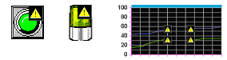
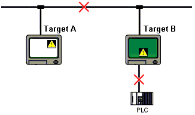

|
|
|
When communication errors occur, the data quality icon  appears on objects that display values from other target machines. The icon
appears on objects that display values from other target machines. The icon  indicates unreliable data.
indicates unreliable data.

In the following scenario, Target A is displaying variables from Target B.

If the data quality icon appears on Target A, there are two reasons why the data might be unreliable:
Connection between Target Machines. The data quality icon  displays on Target A if there is a network problem or other connection error. Target B will not respond to data requests from Target A. The data may be valid on Target B, but not visible on Target A.
displays on Target A if there is a network problem or other connection error. Target B will not respond to data requests from Target A. The data may be valid on Target B, but not visible on Target A.
Connection between Target B and equipment. The data quality icon  displays on Target A as well as Target B if there is a problem with the connection between the target machine and equipment. The data may be valid on the equipment, but not visible on either target machine.
displays on Target A as well as Target B if there is a problem with the connection between the target machine and equipment. The data may be valid on the equipment, but not visible on either target machine.
If communication resumes and Target A can successfully display variables from Target B, the data quality icon disappears from the display.
For more information about Data Quality, see Section 25.8, Checking the Integrity of Variable Values.
In a Data Sharing environment, there are three reasons why the Data Quality icon  may appear on the target right after startup.
may appear on the target right after startup.
Problem: The connection between target machines is faulty. The other target machine might be turned off, the network cable might be unplugged or damaged, or the network may be down.
Solution: Make sure the target machines and PLC equipment are on and working properly. Make sure the equipment’s Ethernet connection is securely fastened. Check that the network servers and other network devices are on and working properly.
Problem: The target machine cannot locate remote targets that use the IP addresses as defined in the editor.
Solution: In most instances, this occurs when someone changes the IP address of the remote target machine at run time without updating the user-applications on other targets.
In the editor, when you reference remote variables you type the target name, followed by a dot, and then the variable name. At run time, the target name is converted to the IP address of the remote target machine. If you change the IP address of the remote target machine, then other targets cannot locate it and cannot work with its data-shared variables.
To resolve this problem, you must define the IP address in the Vijeo-Designer editor, then download the application to all the targets in the project to make sure all the data-sharing references are correct.
Problem: The target is denied access to variables on the remote target machine.
Solution: Either the target is not set up to share its variables or the variables being accessed are not shared (Sharing = None).
In the editor, make sure the target whose variables are viewed and edited by other targets is set up with DataSharing = Enabled. For example, if Target A's variables are used by Target B, make sure DataSharing = Enabled on Target A. DataSharing on Target B could remain disabled.
Variables that are referenced by other targets should be set to either Read-only or Read/Write.

Data Sharing uses IP addresses set up in the editor whenever referencing remote variables. If your system uses data-shared variables, make sure you do not change IP addresses at run time. Any change to IP addresses should occur in the editor only, then downloaded to all the target machines in the project.